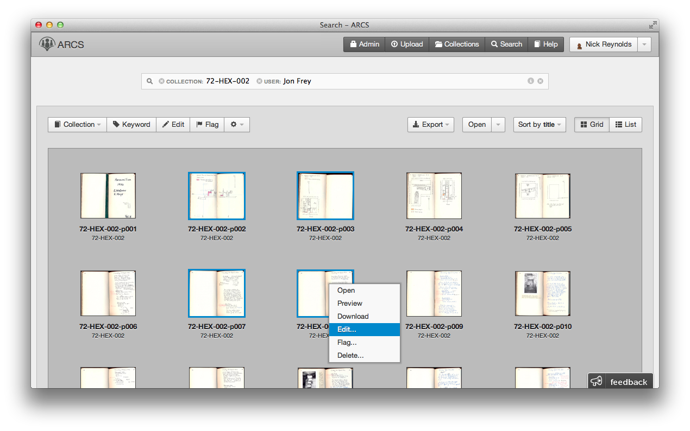

Hi — I'm Nick Reynolds.
I'm a Software Developer from East Lansing, Michigan.
Get in touch with me at ndreynolds@gmail.com.
A Few Things I've Made...
-
Flathead
is a JavaScript interpreter written in C.

-
ARCS is an open-source web platform for humanites-based research. Create, relate, organize and search digitized primary evidence.

Under the covers, it's a web application built on Backbone.js and a RESTful CakePHP backend that persists to SOLR and MySQL. 
Browse the source code on Github
- I drew Julia Set Fractals using JavaScript and the HTML5 Canvas API. Fair warning, it's not CPU-friendly. See the source on Github
-
Hopper is an experimental distributed issue tracker. It's built in Python and uses Git for versioning.
- vim-cakephp is a Vim plugin for CakePHP. I returned from the depths of VimScript with a tool to quickly navigate the MVC structure.